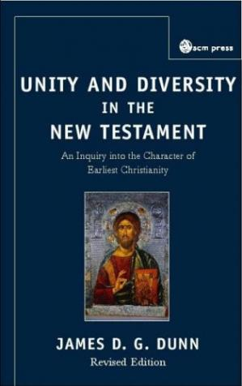

Unity and diversity in the New Testament: an inquiry into the character of earliest Christianity
Desc: Unity and Diversity in the New Testament is a thorough investigation into the canon of the New Testament, and Christianity's origins. It assumes the reader is familiar with the basic question of who wrote the books, when, why etc and it moves on to look in detail at what were the various emphases in the gospel proclaimed by Jesus, Luke, Paul and John. It also examines primitive Christianity's preaching and teaching, confessional formulae, oral traditions, organisation and worship, concepts of ministry and community, and ritual acts. In the second half of the book, the author maps out the scope of the diversity he found in the fist half's investigation. Here he identifies and traces the major currents within the stream of first and second generation Christianity which includes a study of Jewish Christianity, Hellenistic Christianity, Apocalyptic Christianity and Early Catholicism. The book concludes with a consideration of the repercussions of such findings, for how Christians understand the New Testament, and what it means to be Christian, today. This new edition is further enhanced with the author's consideration of these same themes, 25 years after he first wrote about them. The final chapter is the authors "critical refinement" of the ideas and issues that remain relevant and important for any realistic theology of canon to be considered today.
https://fr.b-ok.xyz/dl/1170981/1cd36b
